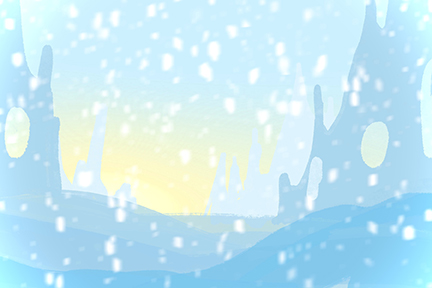

Extinction Report: (blank)
Journal-1
The second dimension, which I named D2-Frozen, is in icy age. The detector showed a temperature of -320°C (above the biological limit); solar radiation severely reduced; low CO2, and the Earth's rotation was slow. Even I waited for 20 hours, and it was still daytime.
